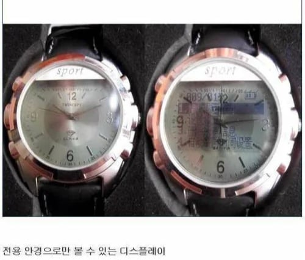

오래전부터 중국에선
Lcd방식으로 부정행위를해옴
안경에 lcd인식가능한 패널이달려있고
맨눈 보기엔 평범한 아날로그시계로보임.
패널만으로는 안경의 디지털기기가아니기에 열화상감지 , 세척기가 안먹힘

오래전부터 중국에선
Lcd방식으로 부정행위를해옴
안경에 lcd인식가능한 패널이달려있고
맨눈 보기엔 평범한 아날로그시계로보임.
패널만으로는 안경의 디지털기기가아니기에 열화상감지 , 세척기가 안먹힘
중국은 emp 쓴다던데
이게 3년전 기사네 ㄷㄷ
https://www.chosun.com/international/international_general/2023/06/08/RRKLFIN6KVHATHVN5ZE6Q62RQA/
뭐 안걸리면 성공하는거지
중급닌자시험은 걸려도 닌자다우면 봐주던데
이래서 수능때 전자시계 금지하는거구나
저건 그냥 보면 아날로그라 못막을 듯
전자시계 금지한다고 해도 계산기 쓰는 시험에서 마개조한 계산기 나오면 방법없네 ㅋㅋㅋ
계산기를 시험주체기관에서 뿌리는수밖에...
쓰고 다시 걷어야할듯 아니면 가져온거 걷어서 랜덤으로 뿌리던가
편광필름 같은건가보네
문제는 어디서 촬영해서 전송하지
그냥 디지털 저장방식 일지도 예상답안 컨닝용
emp 말고는 답이없네
어렵게 산다 걍 나처럼 머리속의 기가창섭한테 물어보면 다 알려주는데

기가날두는 안 되나요?
걔는 Siuuuuuuu!
만 외치기때문에 도움안됨

긴장 안하려고 시험전에 청심환먹었는데
사라짐 어뜩함...
그냥 공부 열심히 한 청년..
비겁하게 머릿속에 담아오네
시계는 안경과 달리 필수품 아니니까 (시험장에 시계 있으니) 빼라고 하면 되겠네
저게 led가 아니더라도 데스노트 라이토 시계마냥 컨닝 페이퍼 숨겨놓을 수도 있고
10년뒤엔 빤스만 입고 하면 웃기겠네 ㅋㅋㅋ
내용 적어오는 컨닝은 온갖 수단이 있고 이번에 문제된건 카메라로 찍어서 AI한테 풀어달라는 방식인데 이건 카메라 렌즈가 필수라 숨기기 힘들듯
이런 머리로 공부를 해
시계자체를 막으면 되는거 아님? 간단쓰
AI 있으니까 온갖 방법으로 시도가 가능한것도 문제네. 문제 풀어줘! 해결방법 제시해줘! 이렇게 작게 숨기기 쉽게 만들고 싶은데 도와줄래? 정답을 모스부호로 변환해줘! 그냥 ㅅㅂ 못할게 없어
이제 진짜 닌자시험이네
그냥 통신 교란만 하면 되는거 아니냐?
어떻게 하면되냐고?? "해줘"
농담 아니고 emp쏴야됨 ㅋㅋㅋㅋ
머릿속으로 gpt를 써
머릿속 호날두한테 요점정리 시키면되는데
전자렌지 30초 돌리고 주면 안될까?
앞으로 알몸으로 시험보게 해야할듯
n년전과 비교했을 때
AI뿐만 아니라 전자제품 모든게 고도화돼서
이전에 한번 막혔던 치팅들을 완벽하게 시도한 케이스도 있긴할듯
진짜 닌자시험이네
머리 속에 저장해두고,
필요할 때 컨닝하라고..
머릿속에서 emp 터졌다고 ㅠ
인도 중국은 수험생이 천만명넘을텐데 어케 감당하냐